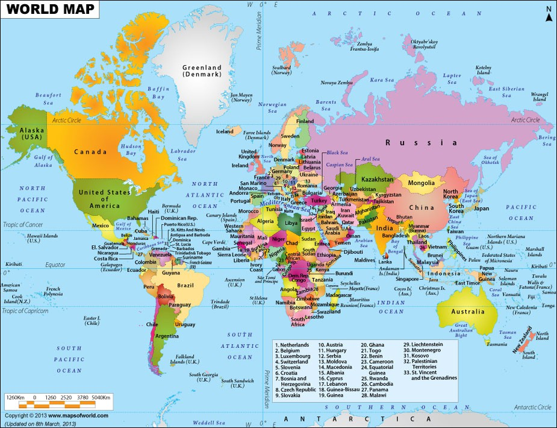

Enumerable Methods
10/31/14
What is this, Enumerable#map?

That's what you are looking for, right? Alright fine, I'll tell you what the map method is.
The map method is a powerful method that takes an enumerable object and a block of code for arguments. It then runs the same block of code for each element within the object and outputs the return value from the block of code.
Here's an example.
sample_array = [ 0, 1, 2, 3, 4, 5]
sample_array.map do |element| element * 10 end
The example above shows us the sample_array containing 6 elements. The next line utilizes the map method by calling the .map method on the array object. The block of code simply says for each element in the object, multiply the element by 10 and return a new version of the array.
You might think, "William, you are crazy. Can't I just use the .each method and call it a day?"
It's true, the .each and .map methods operate the same way but differ by the end return value. Each returns the original input object while Map returns a new object with the modified elements. Don't believe? Let's see this in irb action.
Remember the differences between the two methods. It's pretty good stuff!